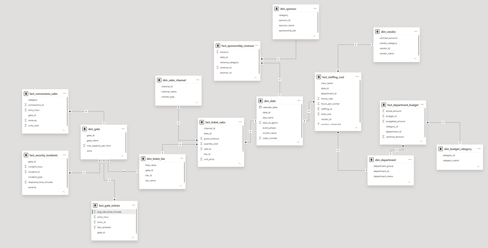

← Back to Super Bowl Operations Analysis
In Progress
📊 Super Bowl Operations — Data Model
Eight dimension tables surrounding six fact tables, all built in SQL Server.
dim_date is the shared time dimension — ticket sales,
sponsorship installments, and staffing shifts all hang off it, so any of the
three can be grouped by week, month, or event phase without separate date
columns.
SQL Server · T-SQL · Star Schema
